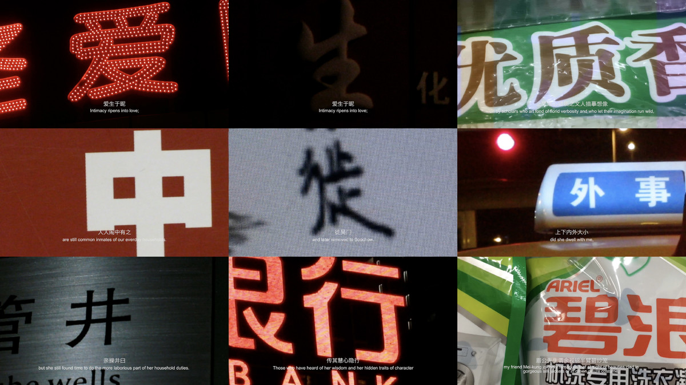

影梅庵忆语 | THE REMINISCENCES OF TUNG HSIAO-WAN

录像，12分46秒，彩色有声单屏幕，可变尺寸，2016
HD Video, 12`46``,Single-channel\Color, Variable, 2016
在夜晚的苏州城寻找300年前一首情诗。
我在夜里的苏州城街头巷尾拍摄《影梅庵忆语》里的每一个汉字，将这字组成这首百年情诗。《影梅庵忆语》是明末诗人冒辟疆回忆爱妾董小宛的抒情长文。
Searching for a love poem dated 300 years ago at night in Suzhou City.
I searched for each Chinese character in The Reminiscences of Tung Hsiao-wan at night, and photographed (recorded) throughout Suzhou City, these characters combined to this love poem. The poem is a long essay written by Mao Pijiang, a poet of late Ming Dynasty, to memorize his beloved concubine Dong Xiaowan (Tung Hsiao-Wan).
南京艺术学院美术馆，南京
Art Museum of Nanjing University of the Arts, Nanjing
南京艺术学院美术馆，南京
Art Museum of Nanjing University of the Arts, Nanjing